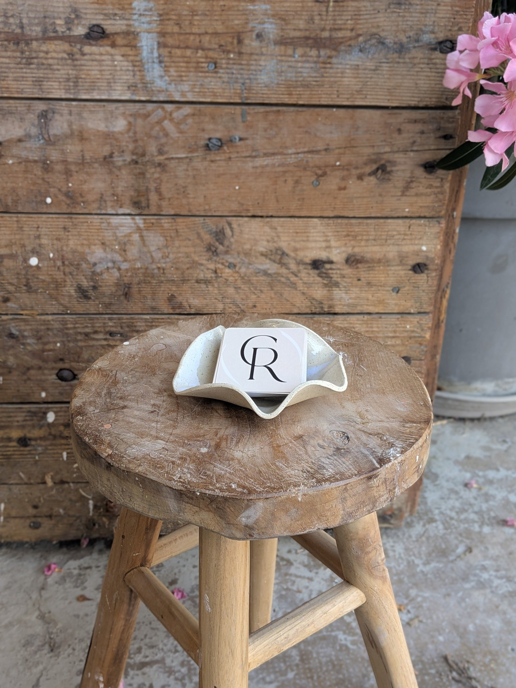
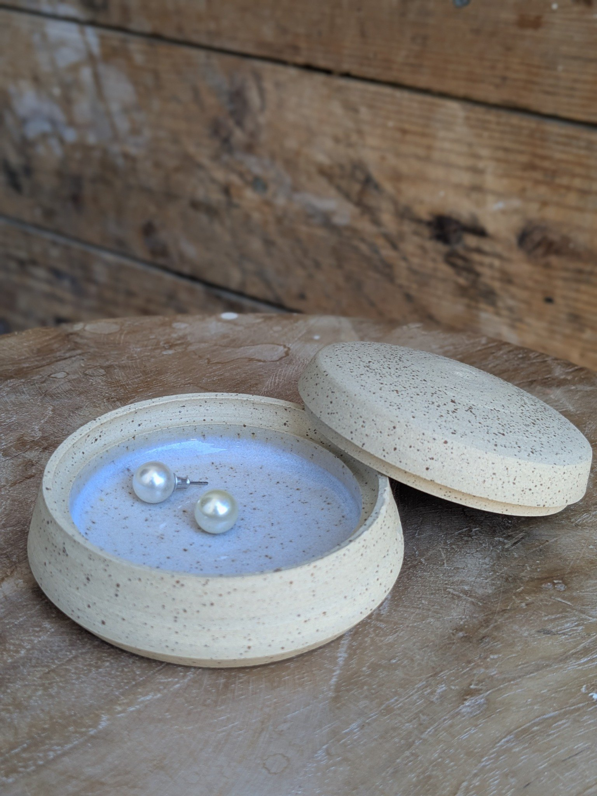

Céramique artisanale · Savoie
Atelier
Caroline Roux
Objets façonnés à la main, au pied des montagnes.

L’atelier, au pied des montagnes
Je suis Caroline Roux, céramiste installée en Savoie.
Au pied des montagnes, dans la vallée de Chambéry, entre le massif de la Chartreuse et celui des Bauges, je façonne chaque pièce à la main.
Le temps du séchage et des cuissons s’accorde au rythme des saisons.


La démarche
La terre, le geste, le temps.
J’imagine et façonne des objets du quotidien aux lignes douces et épurées, où la terre est mise en valeur par des émaux délicats.
Chaque pièce garde la trace du geste et de l’instant où elle a été créée.
Sélection
Quelques pièces




Contact
Voir les pièces
et venir à l’atelier
Les pièces sont visibles à l’atelier sur rendez-vous.